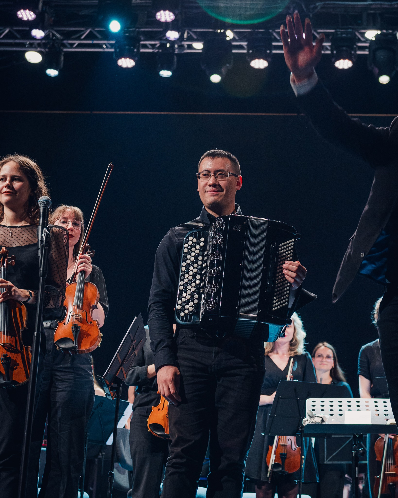
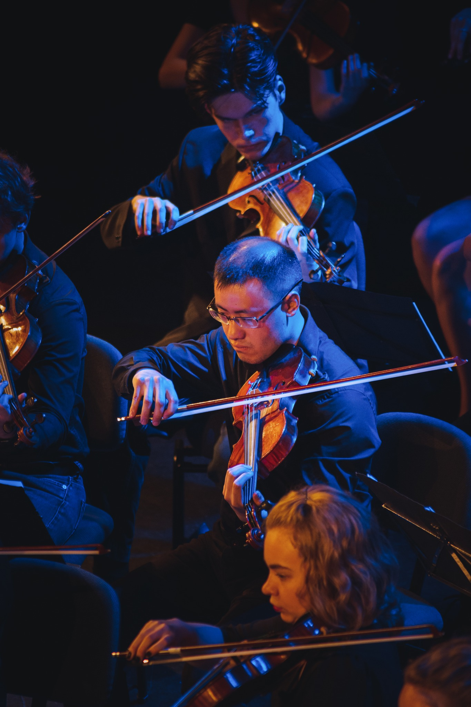

Miscellaneous
Other webpages
Here are the personal webpages of some friends that I met during my Ph.D.
Balthazar Fléchelles
Francesco Denisi
Gonzalo Ruiz Stolowicz
Mihai Pavel
Yusen Long
And here are the webpages of friends I’ve had the pleasure to meet during my studies in Rennes. In some of these, you may find a lot of resources, pieces of advice and tips about the agrégation de mathématiques.
Bastien Jean
Clarence Kineider
Emilie Tezenas du Montcel
François Ernoult
Magali Jay
Marie Trin
Pierre le Barbenchon
Rémi Moreau
Théo Untrau
Thomas Cavallazzi
Music

Photo taken by
Vincent Lambert
Instagram : 0vince_photo

Photos taken by
Lucie WDL Photographie
Instagram : luciewdlphotographie
(Photos taken during the concert of OSUL at Salle Poirel in Nancy, June 9, 2023.)
Here are some arrangements that I made using Musescore 3 (patching arrangements from other people that are available on the website of Musescore).
- O-Zone - Dragostea Din Tei (for symphonic orchestra with many flutes, inspired by this video) Audio from Musescore :
- Saban, Levy - Les Mystérieuses Citées d'Or, with S. Sulerzyski (a piece for drum set, accompaniment by symphonic orchestra with many flutes) Audio from Musescore :
- Nishiura - The Unwound Future (Professor Layton) (for symphonic orchestra with many flutes) Audio from Musescore :
- Kavinsky - Roadgame (for string orchestra) Audio from Musescore :
Math jokes
Tanya Khovanova, My Favorite Math Jokes. (2024)